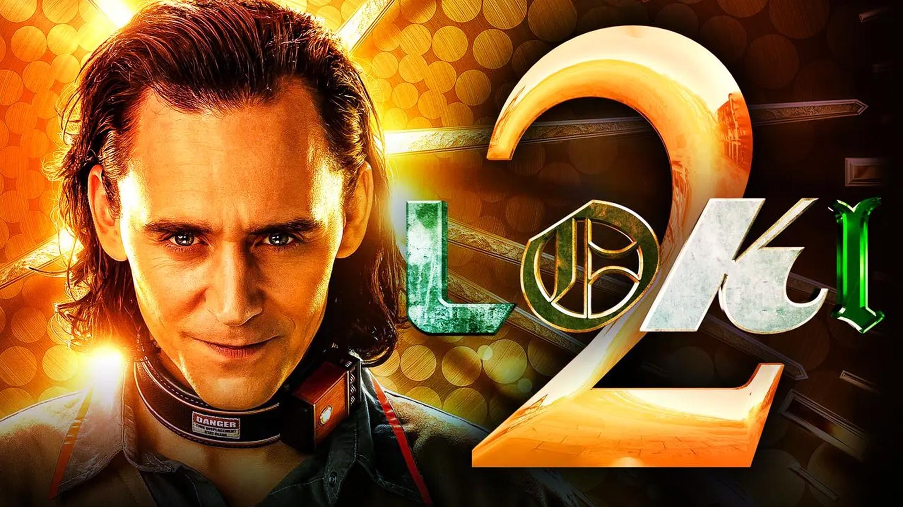

| N. | Nome | Descrizione | Immagine | Rating |
|---|---|---|---|---|
| 1 | LOKI_2 |
Loki si ritrova in una battaglia per l'anima della Time Variance Authority. Insieme a Mobius, B-15 e a una squadra di personaggi vecchi e nuovi, Loki naviga in un Multiverso in continua espansione e sempre più pericoloso alla ricerca di Sylvie, Renslayer e Miss Minutes per comprendere su cosa significhi possedere il libero arbitrio e uno scopo glorioso" |  | ★★★★☆ |
| 2 | ||||
| 3 | ||||
| 4 | ||||
| 5 |